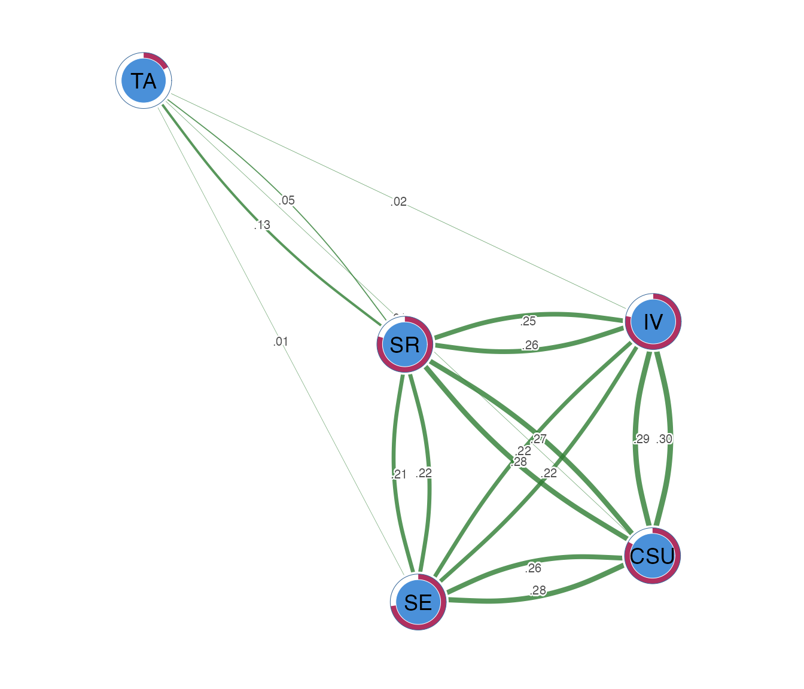

vignettes/relative-importance-networks.Rmd
relative-importance-networks.RmdA relative-importance network
(method = "relimp") is directed. For each
node taken as an outcome, it regresses it on all the others and
decomposes that regression’s R-squared into each predictor’s share using
the LMG / Shapley method (averaging the predictor’s
contribution over every ordering). The edge A -> B is
the share of B’s variance explained by A. Unlike a GGM, the weights sum
meaningfully: a node’s incoming edges add up to its full-model
R-squared.
The Shapley decomposition enumerates predictor subsets, so it is
meant for a modest number of nodes. We use the five construct scores in
SRL_GPT.
ri <- psychnet(SRL_GPT, method = "relimp")
ri
#> <psychnet> relimp network
#> nodes: 5 edges: 20 (directed)
#> optimality (KKT residual): 3.33e-16The incoming shares per node sum to that node’s R-squared; the certificate confirms this efficiency identity holds to numerical precision:
certificate(ri)
#> method certificate kind certified
#> 1 relimp 3.330669e-16 structural TRUEThe directed edges – each predictor’s share of an outcome’s variance:
as.data.frame(ri)
#> from to weight
#> 1 IV CSU 0.288505266
#> 2 SE CSU 0.263574096
#> 3 SR CSU 0.274082666
#> 4 TA CSU 0.007326148
#> 5 CSU IV 0.299473895
#> 6 SE IV 0.216286692
#> 7 SR IV 0.258608009
#> 8 TA IV 0.007032583
#> 9 CSU SE 0.280588934
#> 10 IV SE 0.219009605
#> 11 SR SE 0.220573037
#> 12 TA SE 0.006045547
#> 13 CSU SR 0.277393999
#> 14 IV SR 0.253052645
#> 15 SE SR 0.212824511
#> 16 TA SR 0.052422918
#> 17 CSU TA 0.014154964
#> 18 IV TA 0.015416846
#> 19 SE TA 0.012055817
#> 20 SR TA 0.127772080Per-node explained variance that the incoming edges reconstruct:
net_predict(ri)
#> node type metric predictability accuracy
#> 1 CSU gaussian R2 0.8334882 NA
#> 2 IV gaussian R2 0.7814012 NA
#> 3 SE gaussian R2 0.7262171 NA
#> 4 SR gaussian R2 0.7956941 NA
#> 5 TA gaussian R2 0.1693997 NAcograph::splot() draws the directed network with arrows.
Because each pair has two distinct edges (A -> B and
B -> A), pass directed = TRUE so they are
drawn separately, with psych_styling = TRUE (green =
positive, red = negative) and the predictability ring via
predictability = TRUE.
cograph::splot(ri, directed = TRUE, psych_styling = TRUE, predictability = TRUE)